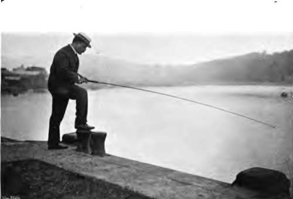
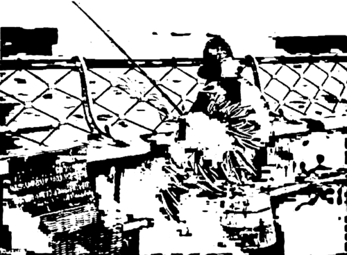
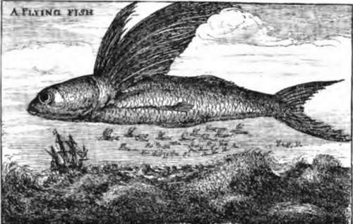
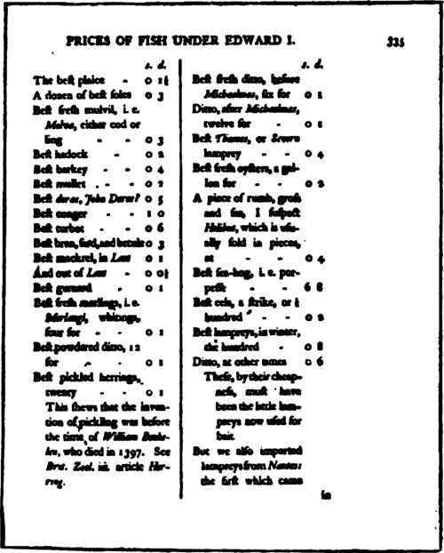

General Remarks On Sea-Fishing From Boats. Continued
Description
This section is from the book "Fishing", by Horace G. Hutchinson. Also available from Amazon: Fishing.
General Remarks On Sea-Fishing From Boats. Continued
Those who own small yachts, by the way, might do worse than invest in a correspondingly small trammel. The trammel is virtually a net wall, standing about six feet high, and doing its work in the dark. More explicitly, it consists of three upright nets, the two outer nets being short, stretched tight between the ropes, and having a large mesh through which the fish can pass, the middle net being much longer, left slack between the others, and having a mesh so small that it arrests the fishes. When a fish swims against the outer net, on either side, it passes easily through the large mesh, and then, still swimming on, goes through the large mesh of the opposite outer net, but with the small-meshed, loose middle net caught over its head and shoulders. This frightens it into darting forward to escape, and that seals its fate, for it is now in a net bag, like any bolted rabbit, and the harder it struggles the tighter it draws the fatal meshes. A small trammel, from fifteen to twenty fathoms, is sufficient for the amateur to amuse himself and supply his yacht with, and Hearder, of Plymouth, would probably supply one of that length for between four and five sovereigns. The trammel is stretched between two lines with lead below and a buoy above, and a series of leads on the lower edge and of corks on the upper serve to keep it in its upright position. It is set from the yacht's dinghey, and the process involves only a little care to pay it out clear and without fouling. On the lee-side of a reef of rocks and parallel with the tide is a likely situation, and it may be set at sunset and taken up before turning-in. Some yachtsmen leave it out close to the yacht all night, but I never found this answer, as, unless one thoroughly knew the ground to an extent very uncommon in the wandering yachtsman, the net either got fouled at the change of tide or else full of small crabs, which were not slow to help themselves to the red mullet, dory, bass, or other good fish helpless to defend themselves against even the most puny aggressor.
A small trawl is also kept aboard some yachts, and one of very manageable dimensions for amateur purposes could be purchased for about five or six sovereigns, with all gear complete. As, however, I have been a constant advocate of increased restrictions on this amateur trawling, which, in the shallow inshore waters, does more damage in proportion to its effective strength than the serious trawling on the outer grounds, and as, moreover, there is nothing sporting in the wholesale greed of this sweeping net, I think it more consistent to refrain from giving any practical hints as to the working of an engine already far too popular. Nor do I care about suggesting the greater popularising of the seine, or sean, though this is at any rate generally " shot" round a well-located shoal of some round fish, like the bass, the mullet, or the mackerel, and does less harm than the trawl (though quite enough, for all that) to the flat-fish. A small sean, for the purpose of amusement, would cost five or six sovereigns, and there is this to distinguish it from the trawl or trammel, that it gives healthful exercise. Those who work it must not mind a wetting even to the waist, and there is an amount of hard pulling that must brace the muscles to a wonderful extent. The sean is "shot" with the aid of a boat in a semicircle, the one end of the rope being left with a man on the beach, and the other brought round in a semicircular sweep by the boat to another point on the beach some distance higher up. The two ends are then hauled close together, and all manner of fish are taken in the small-meshed bunt. Among the fish that I have seen caught in this way are not only those named above, but also sand-eels and launce, monk-fish and small sharks, turbot, soles, and plaice, dory, shad, garfish, and in fact all those fish which haunt an open shore in shallow water.
A word or two on the cost of sea-tackle may not perhaps be out of place in bringing this section to a close, but it is not convenient to go into the subject in much detail, for a comprehensive account from the standpoint of every grade of income would occupy more than the available space.
Tackle specially made for sea-fishing in the old style is not, as a rule, costly. The made-up lines with special fittings work out somewhat higher than might seem necessary, but even these rarely cost more than six or seven shillings complete. On the other hand, if the fisherman makes up his own lines from the raw material, or rather from the manufactured parts, as he certainly should do, he need not spend the half of what these mounted lines would cost him. He can get fifteen or twenty fathoms of tanned line for two or three shillings, and the gut, : lead, and hooks together need not cost as much again. The usual pattern of stout sea-rod costs from half a guinea to a guinea or a little more, and the Nottingham winch suitable for sea-fishing, most costly item of all, may run into thirty or forty shillings.
81.- Expectation
82.- The Enthusiast
Personally, I spend more on the rod and less on the reel. A sea-trout rod, costing a couple of guineas, is balanced by a small bronze check winch at ten or twelve shillings, and this combination suits admirably for the heaviest bass, as also for moderate-sized pollack, for mackerel, or for mullet. The artificial baits used in sea-fishing are far cheaper than those used by the pike or salmon fisher. The " flies" for pollack, bass, or mackerel only cost twopence or threepence each, and the indiarubber baits so extensively used come to little more. Natural baits, particularly living sand-eels, may run into a considerable sum during the season, but so, on the other hand, do live baits for pike. Boat hire is certainly more costly as a rule than in fresh water, but even then it need not alarm, and members of the British Sea Anglers' Society get preferential rates at many ports.

Continue to:
- prev: Chapter XXX. Sea-Fishing From Boats: General Remarks
- Table of Contents
- next: Chapter XXXI. Section II. Sea-Fishing From Fixed Positions